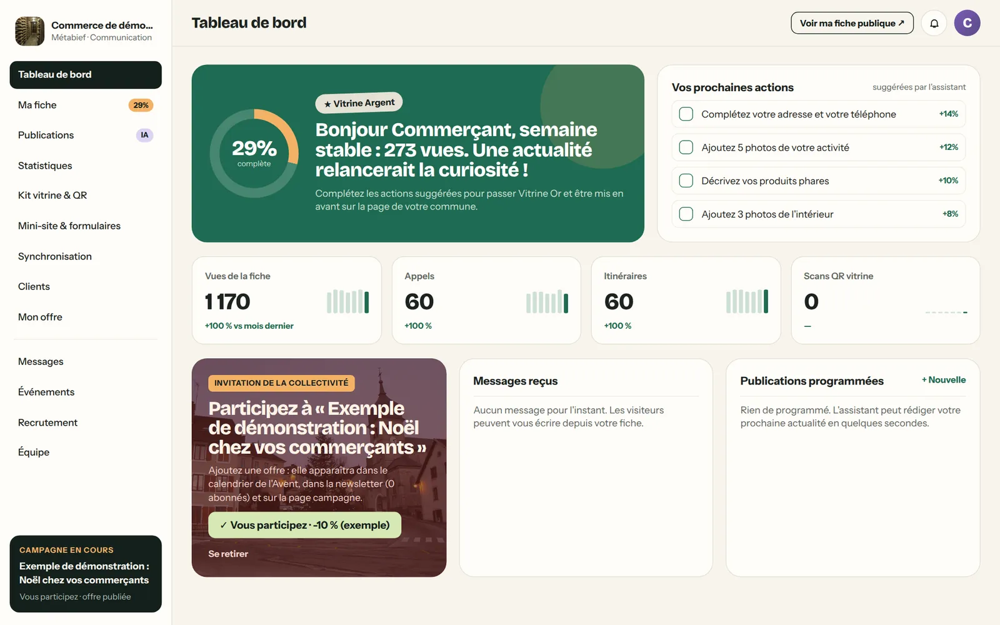

Un cadeau de la collectivité, pas un abonnement de plus.
Vos commerçants sont sollicités chaque semaine par des démarcheurs. terricom arrive autrement : avec une fiche déjà prête, offerte par leur communauté de communes, et aucune obligation. C’est ce qui fait qu’ils s’en emparent.
Ce qui est offert à toutes.
Offert par la collectivité : chaque entreprise du territoire, de la ferme au cabinet d’expertise comptable, dispose de sa fiche et peut la réclamer.
Une fiche complète
Photos, horaires, « ouvert maintenant », téléphone, itinéraire, site, réseaux, spécialités, accessibilité, moyens de paiement.
Bien trouvée
Sur la carte du territoire, dans la recherche des habitants, et sur les moteurs de recherche, grâce à une page soignée et structurée.
Un kit vitrine
Affichette, autocollant et carte avec QR code, prêts à imprimer, pour inviter les clients à suivre l’entreprise.
Les campagnes du territoire
Invitée aux opérations de la collectivité : calendrier de l’Avent, circuits, fête des mères, rentrée.
Ses statistiques
Combien de personnes ont vu la fiche, appelé, demandé l’itinéraire, scanné la vitrine.
Un assistant
Quelques publications par mois rédigées à partir d’une phrase, pour la fiche et la page de la commune.
Une phrase, et c’est publié partout.
« Arrivage de mont-d’or au lait cru pour les fêtes. » L’assistant rédige la publication pour la fiche, Facebook, Instagram et LinkedIn, avec le ton choisi. Le commerçant relit, choisit, publie ou programme.
La publication apparaît aussi sur la page de sa commune et sur le portail du territoire : ce que publie un commerçant profite à tous.
Des conseils simples, des résultats visibles.
Chaque semaine, le commerçant voit ce que lui apporte sa fiche, et reçoit des suggestions concrètes : ajouter des photos, décrire ses produits phares, publier une actualité. Rien de technique.
Il y retrouve aussi les invitations de la collectivité à participer aux campagnes du territoire : un clic pour proposer son offre.

Des options libres, jamais imposées.
Sans engagement, résiliables à tout moment, sans aucune commission sur les ventes. La collectivité peut aussi les offrir à ses commerçants le temps d’une campagne.
Offert par la collectivité
La fiche complète, le kit vitrine, les statistiques essentielles, trois publications par mois, les campagnes du territoire.
Pour attirer plus de clients
Publications illimitées et assistant de rédaction, statistiques avancées, offres d’emploi, rendez-vous en ligne, formulaires de contact.
Pour fidéliser
Tout le Premium, plus un mini-site à son nom, une lettre à ses propres clients abonnés et la diffusion vers ses réseaux.
Une entreprise peut adhérer seule.
Sans attendre sa collectivité, un commerçant, un artisan ou un producteur peut adhérer directement : sa fiche complète paraît dans la vitrine nationale terricom, avec les outils pour faire venir ses clients.
- Une adhésion sans engagement, résiliable à tout moment.
- La vitrine nationale terricom met en avant chaque adhérent, commune par commune.
- Le jour où sa communauté de communes adhère, sa fiche rejoint le portail du territoire, lui est offerte, et son abonnement passe au tarif des territoires partenaires.
Vos entreprises vous attendent peut-être déjà.
Nous vous indiquons combien d’entreprises de votre territoire ont déjà adhéré. En rejoignant terricom, la collectivité leur offre leur fiche : un geste concret, visible de chacune.
La confiance des commerçants, c’est aussi celle des élus.
- Prélever une commission sur les ventes.
- Faire payer sa fiche à une entreprise dont la collectivité a adhéré.
- Démarcher les commerçants au téléphone au nom de la collectivité.
- Revendre des données, afficher de la publicité.
« La fiche est déjà là, offerte par votre communauté de communes. Il ne vous reste qu’à la compléter. »
C’est ce que dit le courrier d’invitation envoyé à chaque entreprise au lancement, signé de la présidence de la communauté.
Nous préparons la démonstration sur vos communes et vos entreprises, avant même notre premier rendez-vous.